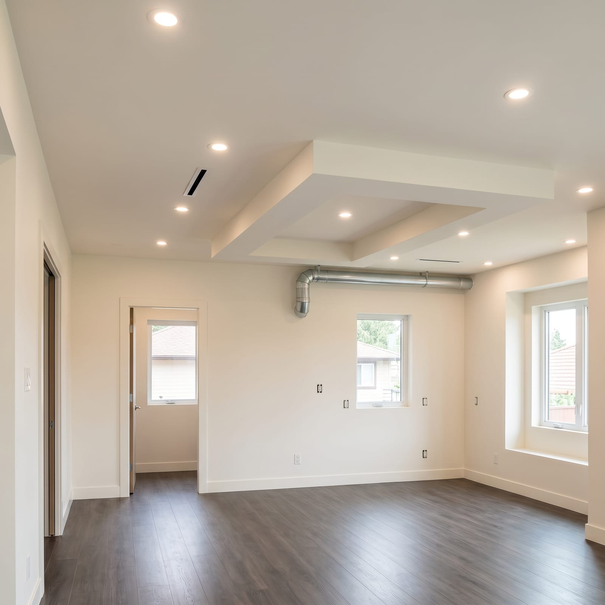
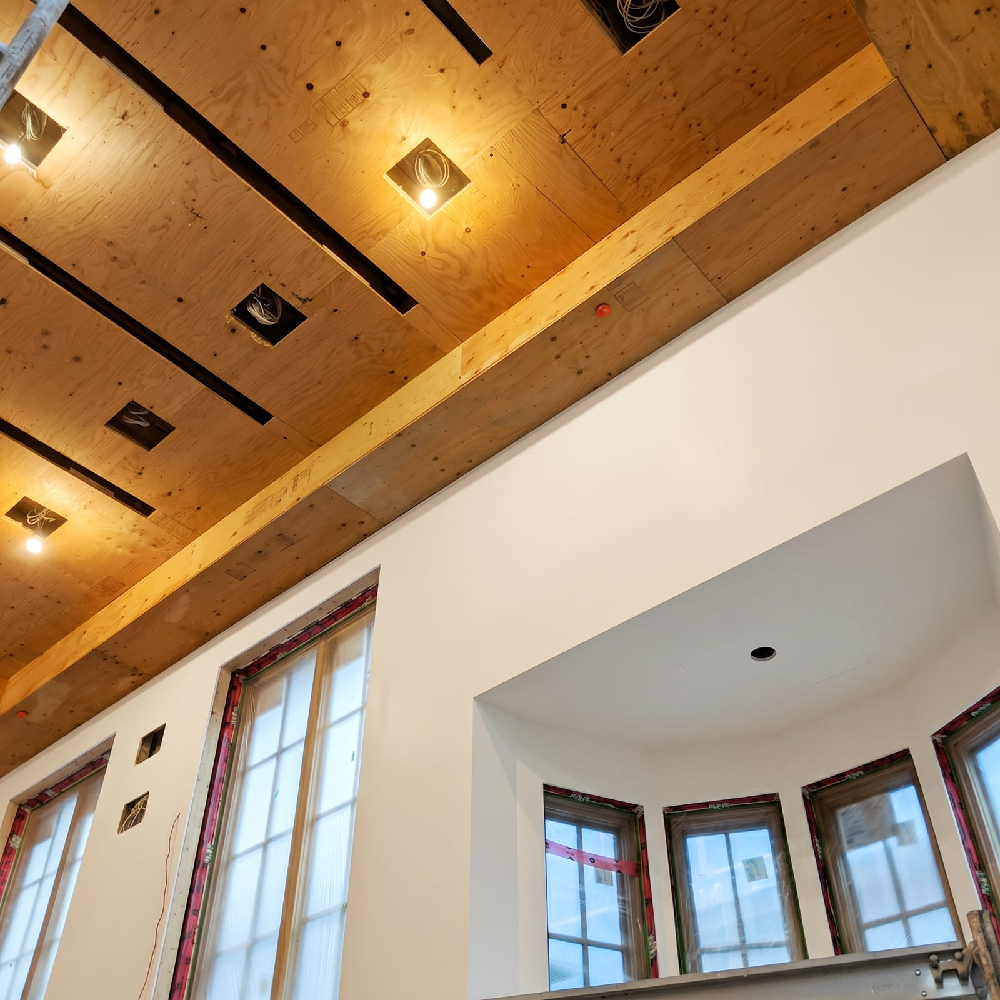
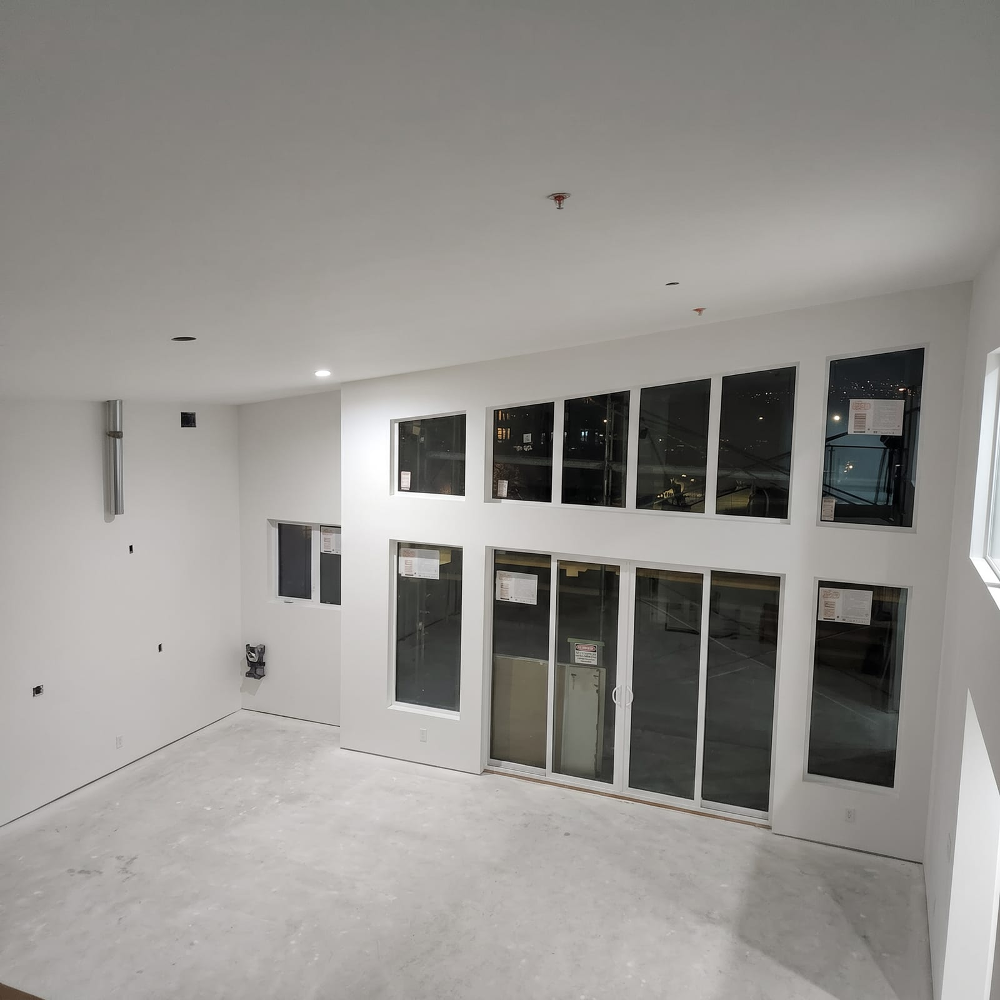
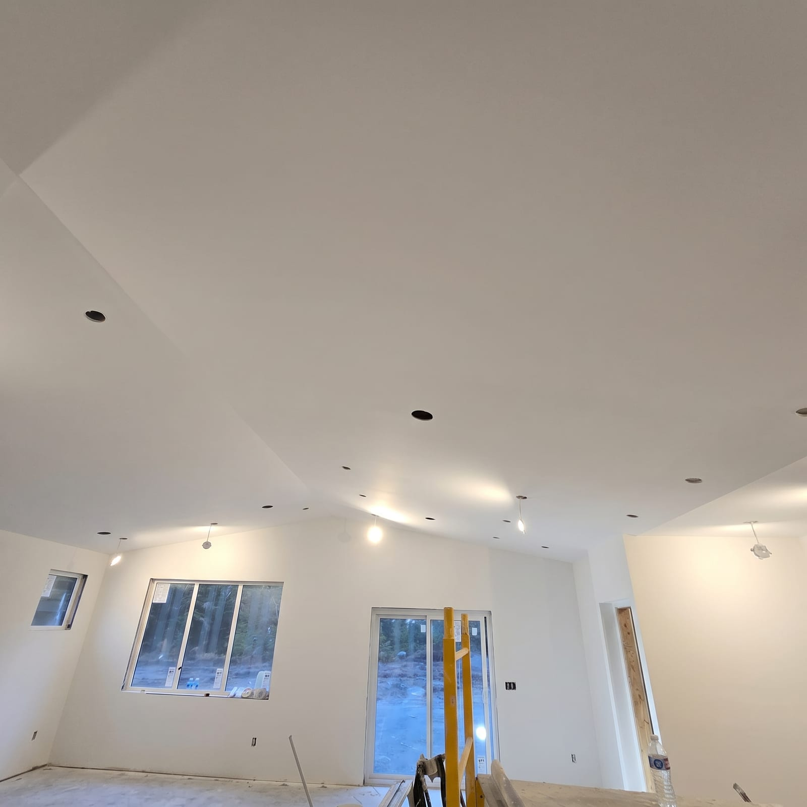
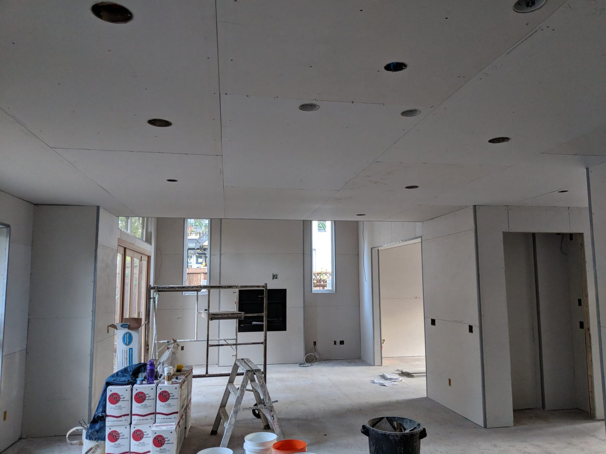
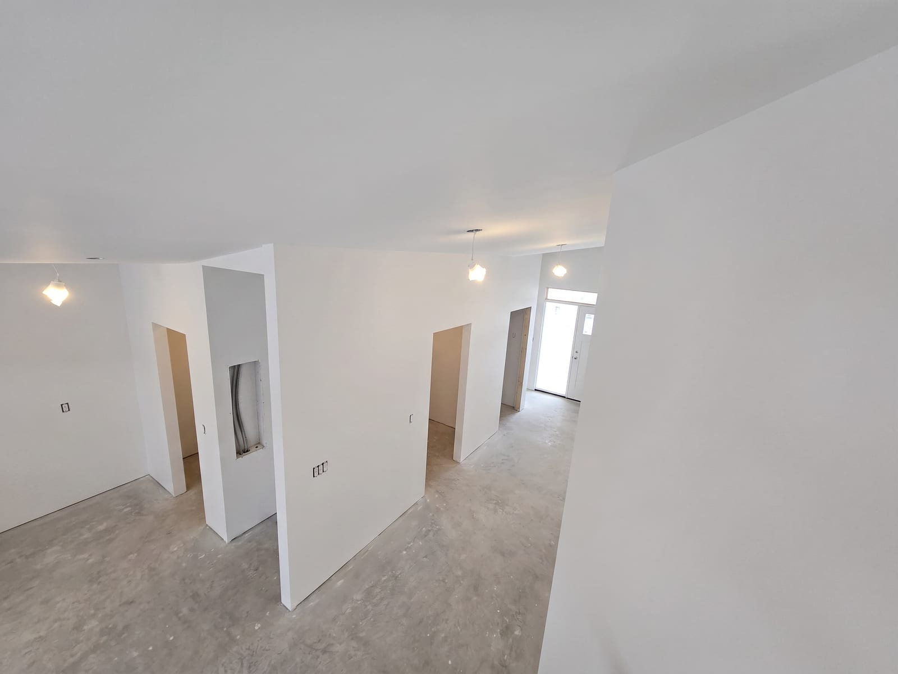
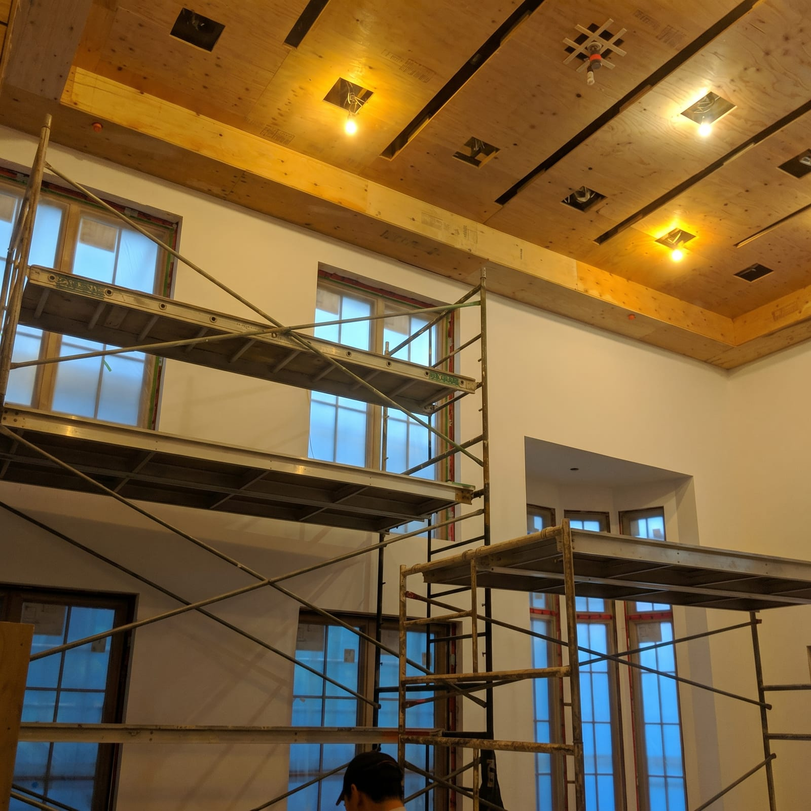
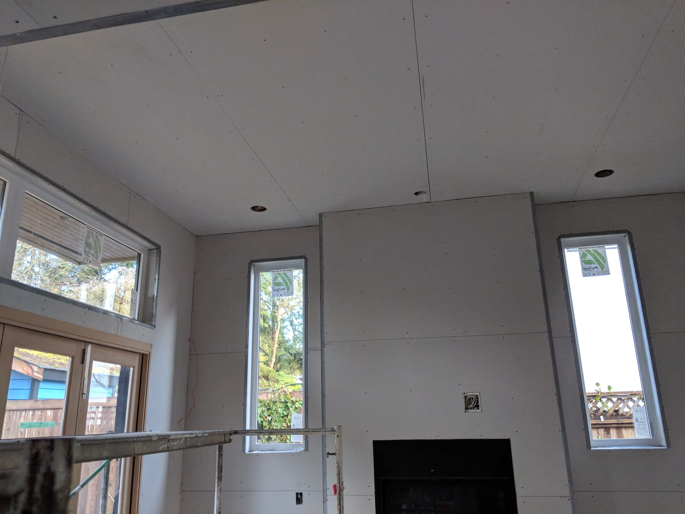
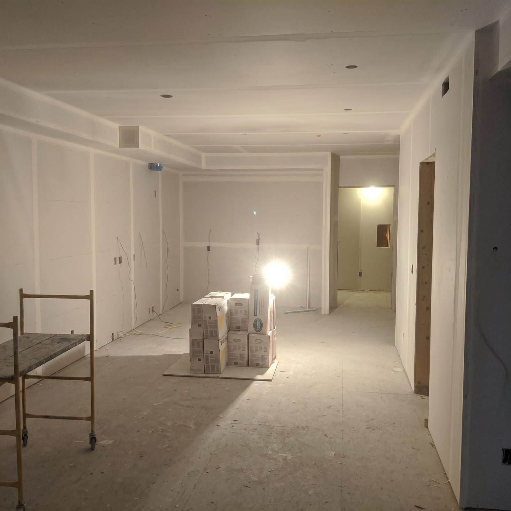
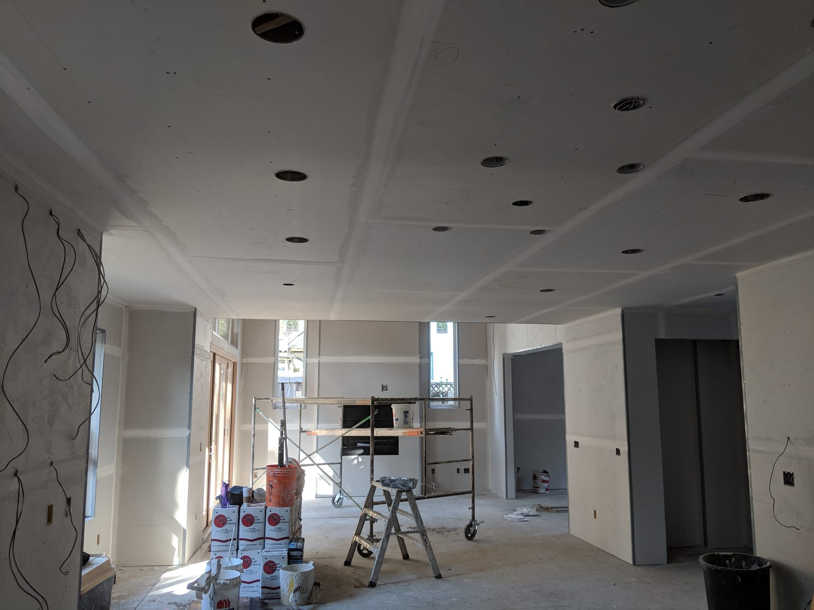

A dozen walls we've finished this year.
New builds, renovations, quick fixes — the same standard across them all. Click through, or pair with the before-and-after series to see the walls before the paint went on.










Want to see the walls transform? Watch the before-and-after sliders, or send over your project.